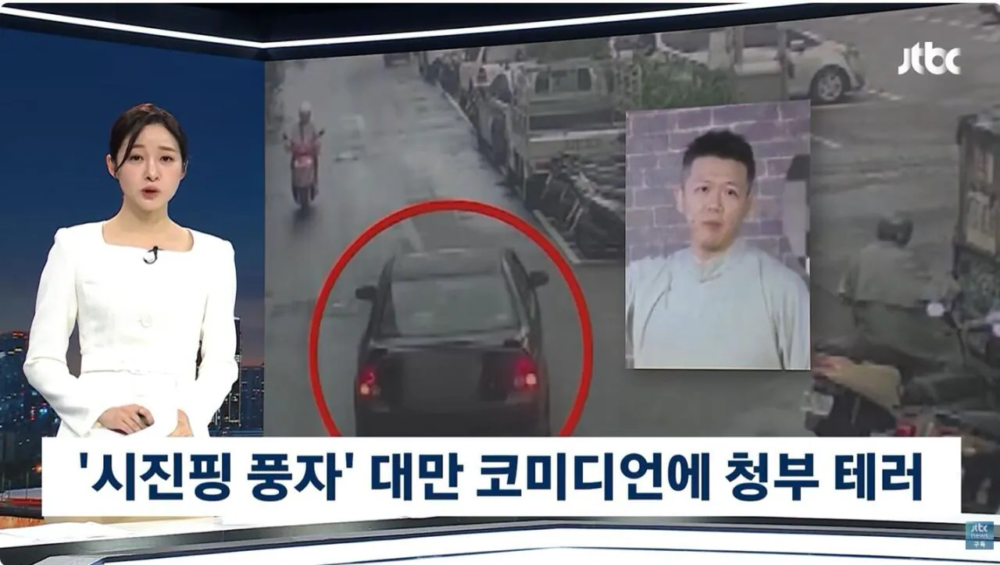
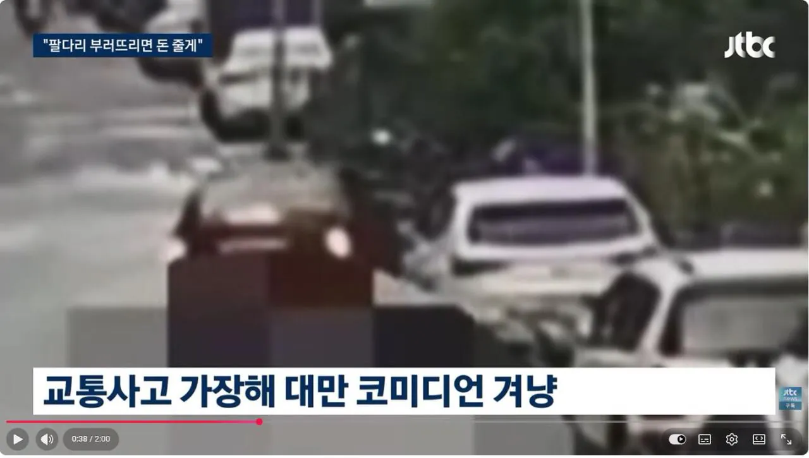
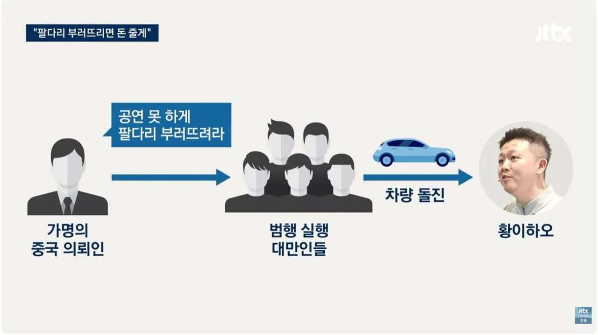

상식을 벗어난 ㅂㅅ들임이 또 한번증명됨.



상식을 벗어난 ㅂㅅ들임이 또 한번증명됨.
특정했을때 이미 범행당일 출국해서 인터폴 적색수배요청 박았음
내가 모르면 조용히 넘어간거임
근데 뭐 해결방법있나..? 당일 바로 출국했는데..
영업 재개한 모양인데, 간만에 한번 가야겠다. 그집 유명한 탕수육 맛집임. 먹어서 응원해주기
어디야 뭐라고 검색하면 돼
분당에 있는가게임ㅋㅋ시진핑이라구 가족끼리 몇번먹으러갔었는데,.. 상호바꼈다구들음
우리나라도 있었을 것 같은 느낌이... .... 읍...읍!
시진핑
천안문
독재 불만이라더니 헛소리였네
우리나라도 중국인들이 한국인 가게테러했는데 걍 조용히 넘어갔네
북한, 중국한테 그냥 아무것도 못하고 쩔쩔매는구만
우크라한테도 조롱당하고
국격달달하다